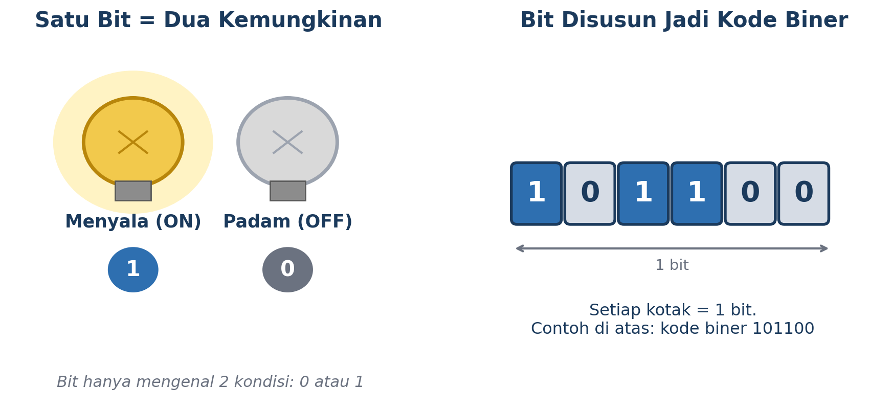
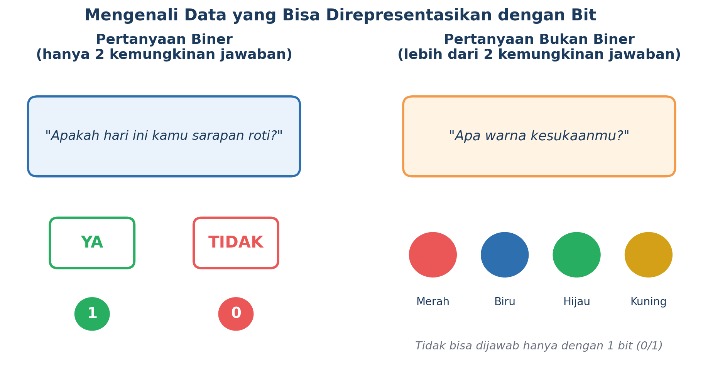
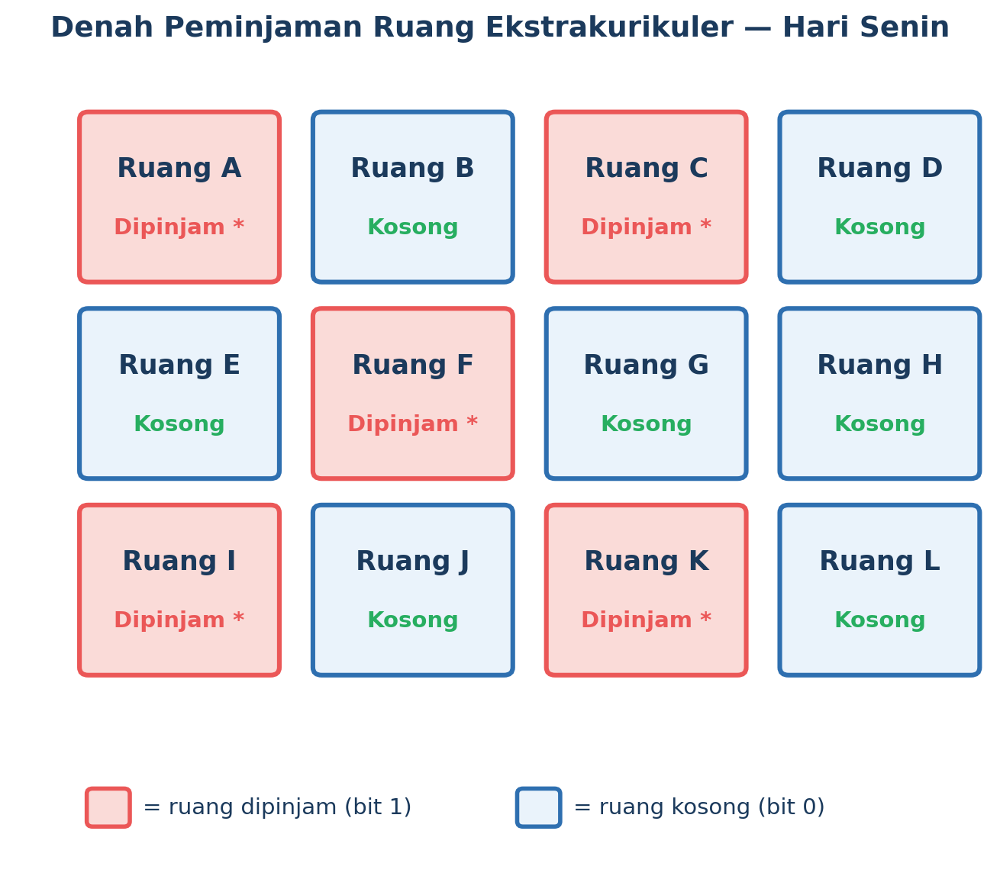
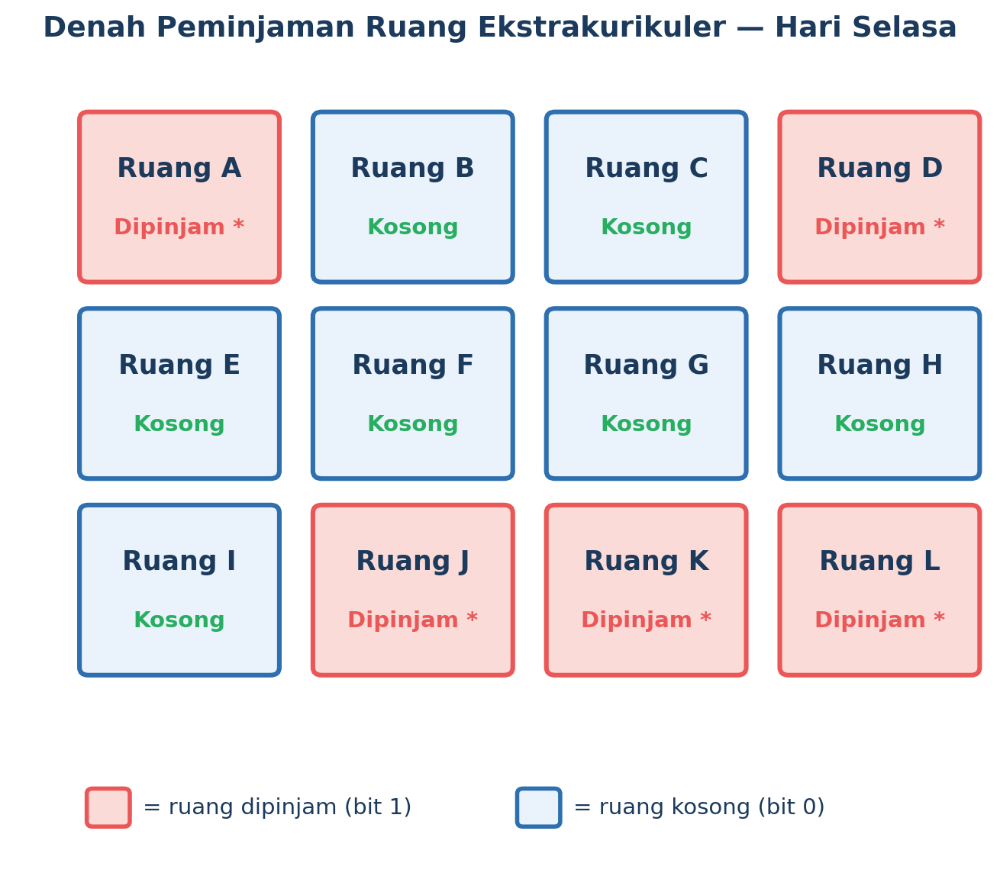
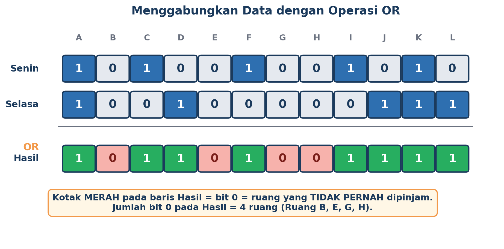
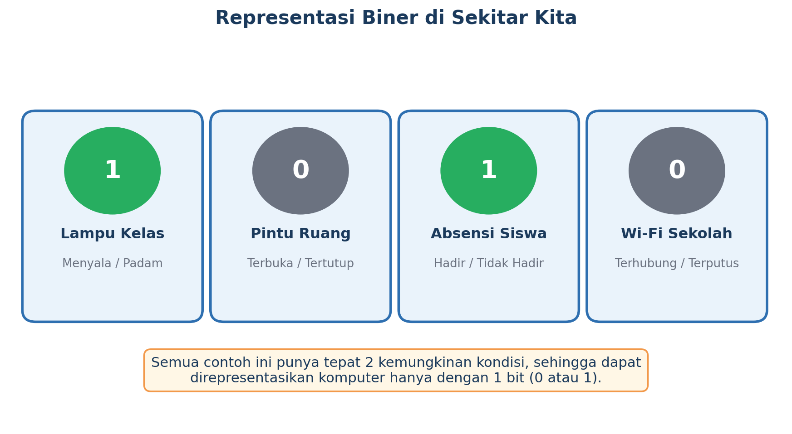

Komputer Itu Sebenarnya “Mikir” Pakai Apa, Sih?
Coba deh perhatikan HP atau laptop kamu. Ia bisa mainin lagu, nampilin foto, bahkan membalas chat kamu secepat kilat. Tapi tahu nggak, di dalam “otak”-nya, komputer itu sebenarnya cuma kenal dua hal doang: 0 dan 1. Cuma itu, nggak lebih!
Kedengarannya aneh, ya? Gimana caranya cuma dengan dua angka, komputer bisa melakukan hal serumit itu? Nah, di halaman ini kamu bakal ketemu jawabannya: konsep yang namanya representasi data biner.
Kenalan Sama “Bit” — Si Kembar 0 dan 1
Satuan data paling kecil di dunia komputer disebut bit. Satu bit itu ibarat saklar lampu: cuma ada dua kondisi, menyala atau padam. Kalau menyala, kita sebut nilainya 1. Kalau padam, nilainya 0. Nggak ada kondisi setengah menyala — ya menyala, ya padam.

Kalau beberapa bit ini digabungkan berjajar, jadilah yang namanya kode biner atau bilangan biner. Semakin banyak bit yang dipakai, semakin banyak juga informasi yang bisa “diceritakan” oleh deretan angka itu.
Pertanyaan Mana yang “Cocok” Buat Bahasa Komputer?
Nggak semua data bisa langsung diwakili satu bit saja. Triknya gampang: cek dulu, ada berapa kemungkinan jawabannya?

Pertanyaan seperti “Apakah hari ini kamu sarapan roti?” itu cuma punya dua kemungkinan jawaban: Ya atau Tidak. Nah, ini pas banget diwakili satu bit — misalnya Ya = 1 dan Tidak = 0.
Tapi coba lihat pertanyaan “Apa warna kesukaanmu?” — jawabannya bisa macam-macam: merah, biru, hijau, kuning, dan seterusnya. Karena kemungkinannya lebih dari dua, satu bit saja nggak cukup untuk mewakilinya.
Misteri Ruang yang Nggak Pernah Dipinjam
Sekarang, waktunya praktik! Bayangkan sekolahmu punya 12 ruang kegiatan ekstrakurikuler, dari Ruang A sampai Ruang L. Setiap hari, panitia mencatat ruang mana saja yang dipinjam. Berikut catatan untuk hari Senin dan Selasa:


Denah peminjaman ruang hari Senin (kiri) dan hari Selasa (kanan). Warna merah = dipinjam.
Pertanyaannya: berapa banyak ruang yang TIDAK PERNAH dipinjam sama sekali, baik hari Senin maupun Selasa? Kamu bisa saja mengecek satu-satu, tapi itu lama, kan? Yuk, kita pakai cara berpikir komputasional!
Langkah 1 — Ubah jadi kode biner
Karena setiap ruang cuma punya dua kemungkinan (dipinjam atau kosong), kita bisa tuliskan sebagai bit: 1 = dipinjam, 0 = kosong. Urutannya dari Ruang A sampai Ruang L.
Kode hari Senin:
Kode hari Selasa:
Gabungin Data Pakai Operasi OR — Kayak Detektif!
Untuk tahu ruang mana saja yang PERNAH dipakai (baik di hari Senin saja, Selasa saja, atau dua-duanya), kita pakai operasi logika OR. Aturannya simpel banget:
- Kalau salah satu bit (atau dua-duanya) bernilai 1, hasil OR-nya = 1.
- Hasil OR cuma bernilai 0 kalau KEDUA bit yang dibandingkan sama-sama 0.

Setelah semua bit digabung dengan OR, kita tinggal menghitung ada berapa banyak angka 0 yang tersisa. Itulah jumlah ruang yang benar-benar nggak pernah dipakai sama sekali selama dua hari itu — jawabannya ada 4 ruang, yaitu Ruang B, E, G, dan H!
Biner Itu Ada di Mana-Mana, Lho!
Setelah paham konsepnya, coba perhatikan sekelilingmu. Banyak banget hal di sekitar kita yang sebenarnya cuma punya dua kemungkinan kondisi — persis seperti bit!

Lampu kelas menyala atau padam, pintu ruang terbuka atau tertutup, kamu hadir atau tidak hadir di kelas, Wi-Fi sekolah terhubung atau terputus — semuanya bisa direpresentasikan dengan satu bit saja. Sekarang, coba pikirkan tiga contoh lain di sekitarmu yang juga punya sifat serupa!
Rangkuman — Yang Perlu Kamu Ingat
- Bit adalah satuan data terkecil pada komputer, hanya bernilai 0 atau 1.
- Data dengan tepat dua kemungkinan (ya/tidak, ada/tidak ada) bisa direpresentasikan dengan satu bit.
- Beberapa bit yang disusun berjajar disebut kode biner, dan digunakan untuk mewakili kumpulan data sekaligus.
- Operasi logika OR berguna untuk menggabungkan dua himpunan data biner: hasilnya 1 jika salah satu (atau kedua) datanya bernilai 1.
- Cara berpikir ini membantu kita menyelesaikan masalah data secara efisien, seperti yang dilakukan komputer sehari-hari.
Kata Kunci
| Istilah | Penjelasan |
|---|---|
| Bit | Satuan data terkecil pada komputer, bernilai 0 atau 1. |
| Biner | Sistem bilangan yang hanya terdiri atas dua angka: 0 dan 1. |
| Representasi Data | Cara data dari dunia nyata disimpan/ditampilkan dalam bentuk yang bisa diproses komputer. |
| Operasi OR | Operasi logika yang hasilnya 1 jika salah satu atau kedua data bernilai 1, dan 0 hanya jika keduanya bernilai 0. |
Yuk, Cek Pemahamanmu!
Coba jawab dulu di kepalamu atau di buku catatan, baru klik tombol untuk melihat kunci jawabannya.
Setelah ini, lanjutkan diskusi bersama kelompokmu lewat LKPD “Aktivitas Peminjaman Ruangan” yang diberikan gurumu.